Сводка:
- Стандартное приложение "hello world"
- Правка графических интерфейсов
- Интеграция с Tomcat
- Создание веб-проекта
- Создание страниц JSP
- Правка компонента JavaBeans
- Правка сервлета
- Определение тега
- Прочее
Стандартное приложение "hello world"
В статье рассматривается создание простого стандартного проекта — приложения, выводящего строку "hello world". Затем к проекту будет добавлен графический интерфейс.
Выполните следующие действия:
Файл ---> Новый проект
Стандартное ---> Приложение Java
и назовите проект "tutorial"
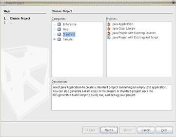
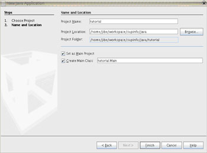
Введите следующий код в функцию main:
- System.out.println("Hello World");
Построить ---> Построить главный проект...
Выполнить > Выполнить главный проект...
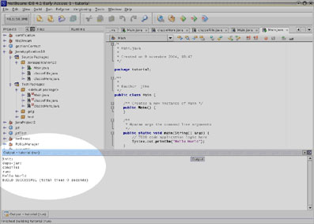
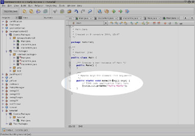
В окне вывода среди строк, выводимых средством ant, должна появиться строка "Hello World".
Правка графических интерфейсов
Воспользуемся редактором графических интерфейсов. Редактор основан на Swing, одной из наиболее распространенных графических библиотек java.
Выполните следующие действия:
Файл ---> Новый проект...
Формы Java ---> Фрейм
и назовите класс "javaGui".
{kind=link}
Выберите на вкладке "Палитра" компонент "Надпись" и разместите его на фрейме в середине экрана. На вкладке "Свойства" введите для переменной "text" значение, например "Hello World". Рекомендуется не торопиться, Swing — крупная библиотека, и этот графический редактор позволяет пользоваться большей частью ее функциональных возможностей.
Перед запуском приложения необходимо проверить, что при запуске используется созданный класс фрейма (Jframe). Выберите в меню Файл ---> Свойства tutorial... ---> Выполнить ---> Выполнение проектов и введите "tutorial.javaGui" в поле главного класса, либо воспользуйтесь кнопкой обзора. Таким образом приложение запустится с главного метода tutorial.javaGui.

{kind=link}
Запустите приложение и насладитесь окном "Hello World" (ужасно, не правда ли?):

Предупреждение.
В графическом редакторе NetBeans используются некоторые графические библиотеки, не поставляемые вместе с java. Следовательно, эти библиотеки необходимо предоставлять вместе с программным обеспечением, созданным с помощью графического редактора NetBeans. Впрочем, не рекомендуется использовать редактор графических интерфейсов без элементарных знаний об интерфейсе API Swing. На первых порах предпочтительно писать графические интерфейсы самостоятельно.
Интеграция с Tomcat
В прошлом году наблюдался рост веб-разработки. Java отлично подходит для этой среды. Сервер веб-приложений tomcat поставляется вместе с NetBeans, что упрощает разработку. Этот раздел посвящен созданию JSP и сервлета. Задача состоит не только в ознакомлении с веб-технологиями, но и в рассмотрении способа использования tomcat посредством NetBeans.
Создание веб-проекта
Выполните следующие действия:
Файл ---> Новый проект
Выберите Веб-проект и шаблон Веб-приложение.
Присвойте проекту имя TomcatTest.
Созданный проект добавляется на сервер приложений Tomcat.
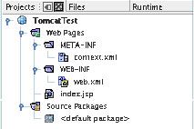
Создание страниц JSP
Откройте файл index.jsp. Это страница по умолчанию для посетителей веб-сайта. Ниже приведен исходный код страницы index.jsp
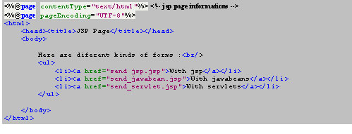
Первые две строки — это коды JSP. Далее создадим форму для отправки и получения полей данных.
Выберите в меню Файл ---> Новый файл... и дважды выберите Веб -шаблон ---> JSP... для создания двух следующих файлов:
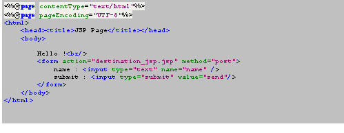
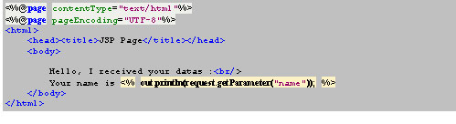
Щелкните правой кнопкой мыши вкладку "Проект" и выберите пункт меню "Выполнить проект". Запустится сервер Tomcat, а в обозревателе откроется файл результатов index.jsp. Чтобы опробовать созданную форму, перейдите по первой ссылке.
Правка компонента JavaBeans
Существуют и другие способы управления данными формы. Один из таких способов — использование компонента JavaBean, т.е. сбор значений в классе Java. В этом классе должен применяться шаблон проектирования (методы получения и установки для каждого значения).
Выполнение компонента JavaBeans:
- Установите курсор в веб-проекте.
- Файл ---> Новый файл...
- Классы Java ---> Класс Java
- Назовите класс java "bean", а пакет — "beanPackage".
Ниже приведен исходный код класса компонента:
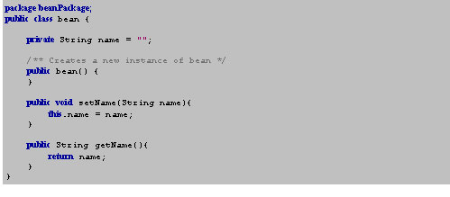
Затем определите форму JSP.
send_javabean.jsp
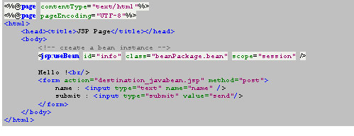
Показан
destination_javabean.jsp
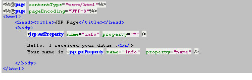
Один
Щелкните правой кнопкой мыши проект на вкладке "Проект" и выберите пункт меню "Выполнить проект". В обозревателе откроется файл index.jsp. Перейдите по второй ссылке для тестирования формы.
Правка сервлета
Сервлеты представляют собой классы java для создания веб-страниц. Фактически страницы JSP автоматически преобразуются в сервлет для компиляции.
Этот раздел посвящен созданию формы с помощью сервлета.
- Создание сервлета:
- Файл ---> Новый файл...
- Выберите в меню Веб ---> Сервлет
- Назовите сервлет "destination_servlet", а пакет — "servletPackage".
destination_servlet.java
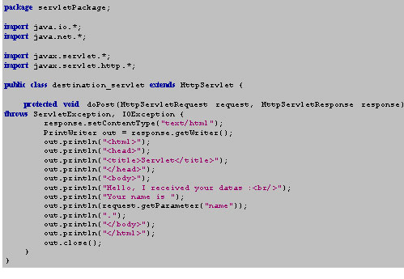
В файле WEB-INF/web.xml можно наблюдать уже настроенный и готовый к работе сервлет.
При этом все равно используется форма JSP:
send_servlet.jsp
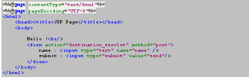
Щелкните правой кнопкой мыши проект на вкладке "Проект" и выберите пункт меню "Выполнить проект". В обозревателе откроется файл index.jsp. Перейдите по третьей ссылке для тестирования решения, основанного на сервлете.
Определение тега
Файлы тегов позволяют определить персональные теги. Так можно простым образом определить заголовок или нижний колонтитул страницы. Создадим такой файл.
Для создания персонального тега необходимо выполнить следующие действия:
Файл ---> Новый файл...
Выберите шаблон Веб ---> Файл тега...
Присвойте файлу имя "powered".
Измените файл тега WEB-INF/tag/powered.tag следующим образом:
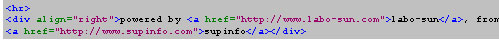
Тег заменяется текстом html из файла. Вызовем тег в файле index.jsp:
index.jsp
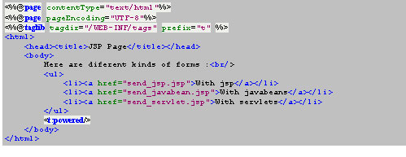
Щелкните правой кнопкой мыши вкладку "Проект" и выберите пункт меню "Выполнить проект". В обозревателе откроется файл index.jsp.
Прочее
На вкладке "Среда выполнения" выберите подкаталог "Реестр серверов", позволяющий получить прямой доступ к ряду функциональных возможностей Tomcat.
Впрочем, если не считать запуска и останова Tomcat, возможности весьма ограниченны. Рекомендуется ознакомиться с документацией и самостоятельно изменить настройку. Затраченное вначале время обернется повышенной производительностью.
По ссылке приведен файл учебного курса: TomcatTest.zip